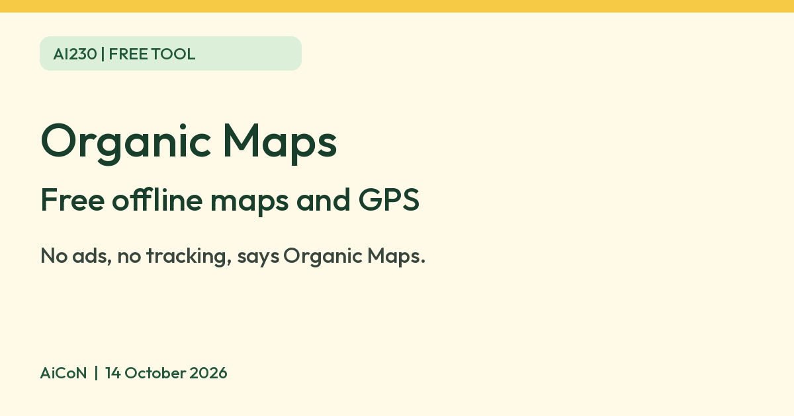

Organic Maps: free offline maps with no ads or tracking
Organic Maps says its offline maps and GPS app is absolutely free, with no ads and no tracking. Maps are OpenStreetMap data, so check routes on a long trip.

Official Organic Maps mark
What it is
Organic Maps is an offline maps and GPS app for walking, cycling, hiking and driving. Its website says it is "powered by OpenStreetMap data", which is crowd-sourced map data, and that it is made by the community behind the earlier MapsWithMe (Maps.Me) app. You download maps for a country or region, then search and navigate without an internet connection. It is not an AI tool. We included it because it is a free app from an official source.
Is it free?
Yes. Organic Maps' homepage says "Absolutely free. No ads. No tracking." Its GitHub page calls it "a free Android & iOS offline maps app" and says it relies on donations. Its terms page says the app is licensed under the Apache License 2.0. We found no paid tier on the pages we read. Donations are optional.
What it does
- Offline maps and search once you have downloaded the map. Turn-by-turn walking, cycling and car navigation with voice guidance, and metro maps.
- Bookmarks can be imported and exported in formats such as KML, GPX and GeoJSON.
- The homepage says it supports 100% of features without an internet connection. We did not test this.
India
- We found no India-specific statement, India map size, or age limit on the pages we read, and we did not check whether the app is listed in your country's store. Its site links to the App Store, Google Play, F-Droid and Huawei AppGallery.
- The maps come from OpenStreetMap volunteers, so detail can vary by area. AiCoN advice: check your route against a second source before a long trip, and do not rely on it alone in an emergency.
Privacy and data
- Organic Maps' privacy policy says it does not track you, and that there is "no collection of location or statistical or personal data from your device whatsoever". It says there is no registration.
- The homepage says the Android app is verified by the Exodus Privacy project and the iOS app by TrackerControl. We did not check those reports.
- The app is operated by Organic Maps OU, a company in Tallinn, Estonia, according to its terms page.
Frequently asked questions
Is Organic Maps free?
Yes. Its homepage says "Absolutely free", with no ads and no tracking.
Does it need internet?
Only to download maps and updates. The vendor says everything else works offline.
Is it AI?
No. It is a free offline maps app. We included it because it is a free tool from an official source.
How to start
- Open the official website and follow its download link for your device. Check your country's app-store availability before relying on it.
- Download the maps for your destination while connected, preferably over Wi-Fi. Check space on your device and the pack size.
- Search your destination and check the route before leaving. Use a second source for a long trip and carry a backup for emergencies.
- Keep downloaded maps updated when online. AiCoN did not install the app, test routing or check map sizes.
What changed since this post?
Homepage, privacy, terms and repository rechecked on 14 October 2026. Free, no ads, no tracking and offline-feature statements remain vendor claims, not AiCoN tests. India/store availability, map sizes and external privacy reports were not checked. Official logo attribution and the website asset licence were added. No map data is redistributed.
Sources: Organic Maps, Privacy policy, Terms, GitHub, Website asset licence. Checked 14 October 2026.
Logo: Organic Maps (organicmaps.app). Independent guide, not affiliated.